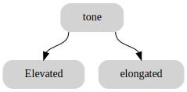
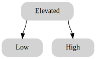
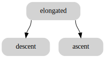
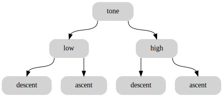

alphabet’s tone in mathematics#
# imports
from binarytree import Node
types of tone:#
We distinguish two types of tone: Elevated and elongated
tone = Node('tone')
elevated = tone.left = Node('Elevated')
elongated = tone.right = Node('elongated')
tone.graphviz()

Elavated tone#
Elevated tone is divided into two categories: low and high
elevated = Node('Elevated')
left = elevated.left = Node('Low')
right = elevated.right = Node('High')
elevated.graphviz()

Elongated tone#
Elongated tone is divided into two categories: Descent and Ascent
elongated = Node('elongated')
descent = elongated.left = Node('descent')
ascent = elongated.right = Node('ascent')
elongated.graphviz()

### intonation
Intonation corresponds to the combination of of elevated and elongated tones. it is a combination of low and high elevated tones and descending and ascending elongated tones. it corresponds to a wave of variable frequencies.
tone = Node('tone')
tone.left = Node ('low')
tone.right = Node('high')
tone.left.left = Node('descent')
tone.left.right = Node('ascent')
tone.right.left = Node('descent')
tone.right.right = Node('ascent')
tone.graphviz()

tone = Node('tone')
tone.left = Node ('Ascending')
tone.right = Node('Descending')
tone.left.left = Node('Low')
tone.left.right = Node('High')
tone.right.left = Node('Low')
tone.right.right = Node('High')
tone.graphviz()

intonation is the fall and rise of the voice in speaking.
$ y = a + b x $
Cell In[8], line 1
$ y = a + b x $
^
SyntaxError: invalid syntax